看一个人的灵魂深处怎么样，就要看他妈妈是什么人。母亲的素质，决定一个民族的前途。
中医判断人死亡的标准是什么？失神！
很多人说，怀孕头三个月是不能告诉别人的，很多流产、小产都是发生在头三月，为什么？有可能坐不住神啊！
现在，很多人都得了失魂落魄的病，如同行尸走肉。失眠、抑郁、狂躁等毛病，都和失魂落魄有关。
恶性肿瘤是怎么产生的？
有些人睡了一天，甚至八九个小时都很累，说明身体没有产生精，而具有产生这个精功能的，是一个魄。
经文：
黄帝问于岐伯曰：愿闻人之始生，何气筑为基，何立而为楯，何失而死，何得而生？岐伯曰：以母为基，以父为楯；失神者死，得神者生也。
黄帝曰：何者为神？岐伯曰：血气已和，营卫已通，五脏已成，神气舍心，魂魄毕具，乃成为人。
黄帝曰：人之寿夭各不同，或夭寿，或卒死，或病久，愿闻其道。
人之所以成形是以什么为基础
梁冬：《灵枢·天年》开篇讲：“黄帝问于岐伯曰：愿闻人之始生，何气筑为基？何立而为楯？”请问什么意思？
徐文兵：这是黄帝在向他的老师岐伯请教，说我“愿”。“愿”的意思就是各从其欲，各得所愿。它是带“心”字旁的，是发自内心、起心发愿的意思。“愿”还带个“原”字，就有想追寻世界宇宙本原的意思。黄帝有“愿”，“愿闻人之始生”。始是什么？形之始也，刚从一团气凝成了一个形。无形的水蒸气突然凝成小水珠，就那么个过程。那么，人在成形的那一刹那，是什么能量给他打下了基础？
人在成形的那一刹那，是什么能量给他打下了基础？
梁冬：“何气筑为基”？
徐文兵：什么叫“基”？“基”和“础”有什么区别？
梁冬：基和础肯定是不一样的！“基”的构成是“其”，下面是个“土”，而且土还埋在下面。“础”是底部出土以上的那部分，而“基”是土地以下的那部分。
徐文兵：我为什么说中国人都有慧根呢？
梁冬：我是中国人。
徐文兵：你本身有遗传，但后来被蒙蔽了。因为我们毁自己的文化比外国人还厉害。
中国人本来都有慧根，但后来被蒙蔽了。
话说回来，这个“基”，我们一般叫地基，是埋在土下看不见的，但是你必须要夯。地基夯不实、筑得不坚固的话，你这个房子盖不高。“础”是什么呢？地上压着“基”的那个石墩。石墩上面有一个立柱，上面有一根横的大梁。“基”和“础”就有这些区别。
它们哪个是阴？哪个属阳呢？基是阴，因为在地下；础是阳，相当于我们说的“根本”。而“根”和“本”又不一样，“根”是埋在地下的，“本”是出土以后的那根树干，“末”是那条树梢。
“根”和“本”又不一样，“根”是埋在地下的，“本”是出土以后的那根树干，“末”是那条树梢。
所以，黄帝问的就是：当人成为人——始生，成形的那一刹那，靠什么来生存。不是说现在有胳膊有腿才叫成形，它最早就是一个成形的存在。
梁冬：应该是两个吧，起码是一个精子，一个卵子。
徐文兵：那还不是你，那会儿还没你呢。是它俩合二为一，成为一个细胞的时候，那才是你。
梁冬：那这个所谓的人之始生，就是那个时间吗？
徐文兵：当它俩结合成一个，合二为一的时候，才叫始生。它虽然是精子、卵子，但仍然还不是你。我们这么说吧，男和女组成了一个家，他们俩离婚了，虽然丈夫也在，老婆也在，但什么没了？家没了！家是什么？精气神。神到底是什么？是个和合而成的东西。离开谁也不成，但它又不是谁。
家是精气神！
梁冬：这个家为什么成为家？夫和妻合在一起才有家，分开之后就没有家。这个东西我觉得经不起深想，一深想之后，会发现自己很不小心地触摸到了一个大问题——一个关于神的问题。
夫和妻合在一起才有家，分开之后就没有家。
徐文兵：神是什么？我只能说神是一个合力，或者说是合作，是臟腑合作产生的一种力。你说它是心？还是肺？中医讲心藏神，没有说心就是神。肝藏魂，肺藏魄，“神”就好像一个东西有重心一样，重心在那儿，但你不能说那个重心就是它。
“神”就好像一个东西有重心一样，重心在那儿，但它并不就指那个重心。
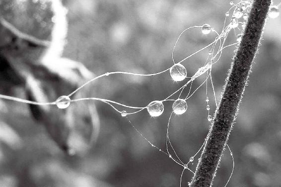
人之始生，需要一个基础，万事万物都是如此。
梁冬：您什么时候明白这个道理的？
徐文兵：我是被周稔丰老师点破心结，然后开始静坐、站桩以后，慢慢开始明白这个道理的。
是谁为我们的生命提供外在的保护
梁冬：什么是“何立而为楯”？
徐文兵：黄帝这样问，说明他已经有一定层次了。他考虑到地下部分的“基”，然后是压着“基”的“础”，接着就是“是什么立而为楯的”？这个楯，有的地方念shǔn，但我们这儿读dùn的音，它相当于立在“础”上面的大桩子，这是块木头，古代把它当栅栏。你要建座墙，先得打地基，然后在地基上面插上木桩子，起一个屏蔽和保护的作用。
在这里，“基”是“根”，是给你一生提供源源不断能量的东西。黄帝就是在问，是谁在给他的“基”提供能量？又是谁给他的“基”提供外在的屏蔽？
是谁在给他的“基”提供能量？又是谁给他的“基”提供外在的屏蔽？
梁冬：黄帝问的这个问题很深刻啊！
判断生死的标准
梁冬：“何失而死，何得而生？”
徐文兵：读到这句话，我就想起少数民族的那些对歌。这些对歌都是一个人在问“黄河几道弯”，而另外一个人在回答。这里，黄帝是在问，判断一个人生死的标准是什么——“失何而死，得何而生？”
梁冬：翻译成白话就是失去什么就死了，得到什么就生了？
徐文兵：但是，黄帝问的是一个倒装句。
他强调的是什么？何！你那样翻译过来就是强调的得、失。他问，到底什么是决定我们生死最关键的东西？损失了什么就要死亡，得到了什么才能生存？所以叫“何失而死，何得而生”。当孔子的学生向他请教生死问题的时候，孔子怎么回答？“未知生，焉知死” 嘛！为什么这么说？因为他自己都没活明白。
梁冬：他连怎么活都没有搞明白，怎么会明白死是个什么问题呢？
徐文兵：所以，孔子不敢碰死的问题。而且“子不语怪力乱神”——这些东西他都不敢谈。
孔子不敢碰死的问题。而且“子不语怪力乱神”——这些东西他都不敢谈。
梁冬：其实，孔子是个《易经》大师，但是他从来不讲这个东西。
徐文兵：我个人认为不是。孔子说：“假我数年，五十以学‘易’，可以无过矣。”证明什么？时间还不够呢。孔子学《易经》，“韦编三绝”啊，把捆书的牛皮绳都翻断了三遍。很下工夫，但磨砖成不了镜，《易经》不是说你“翻三绝”就能学通的事。
孔子不谈“生死问题”，或者说回避死的问题，他很巧妙地避开了。另外，孔子也不谈神，他说了“近鬼神而远之”，别碰他。我个人认为，这是孔子的一套教育传承思想和方法。所以，愣把儒家说成是“教”，说儒教是宗教，我觉得有点拔高。为什么？是宗教就要谈生死，就要谈鬼神。你如果不涉及，解决不了这个问题，或者不谈这个问题，那你就不能称为教。我觉得，孔子被后人人为地拔高了。对照一下《论语》，再看一下《黄帝内经》，我们就明白这一点了。
是宗教就要谈生死，就要谈鬼神。你如果不涉及，解决不了这个问题，或者不谈这个问题，那你就不能称为教。
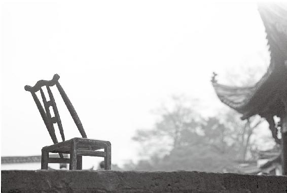
到底什么是决定我们生死最关键的东西？判断生死的标准到底是什么？
生命的长短、活力由谁决定
梁冬：“何气筑为基，何立而为楯？”这个问题岐伯是怎么回答黄帝的呢？
徐文兵：岐伯一想，你问得干脆，我回答得也干脆；你问的是倒装句，我回答的是陈述句。黄帝问：哪股能量或者何气能给人“筑为基”呢？岐伯回答：“以母为基。”
就是说，你妈妈给你提供的精血，是构成你这辈子的精的基。中医称之为“根基”，俗话叫“身体的底子”。而你身体的屏蔽外邪、保护自己的气——“楯”来自于父亲给你提供的那个精血。
人身体的底子来自于妈妈提供的精血，身体屏蔽外邪、保护自己的气来自于父亲。
梁冬：男孩子、女孩子都是一样的吗？
徐文兵：都是一样。道家认为，我们从父母那里继承他们的精、气、神。精气，它有形的表现是：母亲的一个卵子和父亲提供的数亿个精子。另外，我们都认为有一个精子射中卵子以后，会成为一个受精卵，然后其他精子都死掉了，其实不是这样。
知道“间苗”吗？农民耕地时，都是一个坑儿埋两三粒种子，比如说玉米种子。等种子发芽，长出苗以后，挑一个最壮的留下，把别的给拔掉。这叫“间苗”。
梁冬：就像那些风投，投了10家公司，然后发现有那么两三家公司值得培养，就继续保护，花大力气，其他都干掉，或者赶紧卖掉。
徐文兵：人受孕，不只是一个卵子受孕，有的就有两个，或者三个，一般都是两个。在怀孕的过程中，人会选择一个强壮、没病的留下来，让它生长。还有一个呢？间苗间掉了。
梁冬：那双胞胎是不是没被间掉？
徐文兵：双胞胎不是这样。双胞胎有同卵双胞和异卵双胞。由一个受精卵裂变，又变成俩，俩变成俩人。一般的人是两个受精卵变成四个，四个变成八个，最终变成一个人。人家是裂变以后再裂变，变成俩，这叫同卵双胞——同卵双胞胎都长得很像。这不是间苗，是由一个受精卵发育过来的。还有的叫异卵双胞胎，或者是多胞胎。这就是说同时有几个卵子受孕，但是没间苗，就这么生下来了。
我们现在治疗不孕症，好多人都用一种促排卵的药，同时怀上二、三个孩子。其实，母体一般都是同时有两个卵子受孕，然后自动选择一个强壮的留下来，另一个就萎掉了。你间苗时难道会有什么恻隐之心吗？你会说，“哎哟，我怎么不该间它？”
我小时候，在我妈那个老家村里长大，很多经历对我影响特别大。我去锄地，这个很讲究手法，你要知道怎么干才能不费劲儿地把草锄了，得把那个苗留下来，还不能把地给踩实了，得留着那个虚虚的土壤。这是我亲自参加过的，把别的苗活生生揪下来，当时心里是有点不忍。但是为了让那个苗更好地生长，这样做是必要的。还有那葵花上面长着一颗头，结的葵花籽儿特别多，粒儿大也饱满。葵花长出五六颗头了，如果你不忍心掰掉其余的几颗，全留着，就只能用来插花了，别指望它最后结籽儿了。所以，要想结籽就只能留一个——保一个。
人怀孕和“间苗”其实是同样的道理。
有的时候，为了生命的质量，我们必须舍弃一些东西。
“以母为基，以父为楯。”说明什么呀？一个人的寿命长短是由母亲决定的。一个人的活力是不是充沛，是不是能冲、能杀、能打，谁决定的？父亲。所以，一个人外在流露出来的那个特征，属于父亲；根儿里面、骨子里的东西，归属母亲。
一个人的寿命长短由谁决定的？母亲。一个人的活力是不是充沛、是不是能冲能杀能打？谁决定的？父亲。
梁冬：所以，看一个人的灵魂深处怎么样，就要看他妈妈是什么人。
看一个人的灵魂深处怎么样，就要看他妈妈是什么人。
徐文兵：有人说，“母亲的素质，决定着一个民族的前途。”
其实，不论男性还是女性，都是肾功能的一个体现。肾主封藏，但是膀胱叫“州都之官”——“津液藏焉，气化则能出矣”。所以，我们调治女性不孕症的时候，一般总选用足太阳膀胱经上的很多穴位。最有意思的一个穴位叫昆仑穴——足太阳膀胱经的第六十个穴，它在我们脚的外踝高点的后面，就是那个凹陷处。还有最奇妙的一个穴在脚趾头外侧，趾甲那个角的外侧一点儿。这个穴是足太阳膀胱经的第六十七个穴——至阴穴。知道它能干什么吗？校正胎位不正。本来，正常胎位是胎儿在母亲肚子里头冲下，但如果是横着或者头冲上的就叫横生倒产，这是要出问题的。
母亲的素质，决定着一个民族的前途。
头冲下，这个卦位叫否卦，就是怀孕状态。
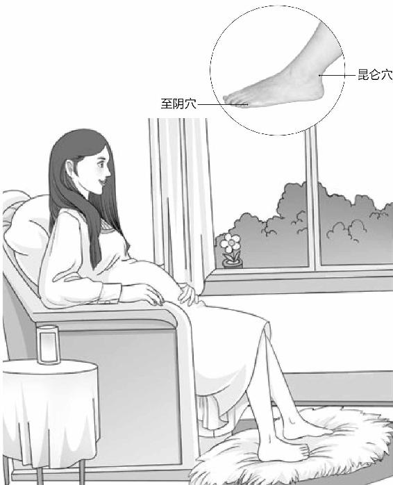
昆仑穴，可以称为“送子观音”；而至阴穴，可以帮您肚子里的宝宝摆正调皮的身体。
梁冬：一出生，头一转过来，这叫泰卦。
徐文兵：所以，女性怀孕后胎位不正，要想矫正胎位，可以艾灸她的至阴穴。你一灸这个至阴穴，大概10～20分钟，再去做B超一看，胎儿转过来了。
我们后背还有一个至阳穴。在后背第七胸椎棘突下，是督脉上的一个穴。
一个女人子宫气化功能强不强，子宫是不是温暖的？决定她能否怀孕、顺产。现在很多人不孕叫宫寒不孕，一把种子撒在冰天雪地里，那不可能长。所以，一个气化功能好的女人必将给自己的孩子带来好处。
卫气在我们皮肤腠理之间，营气在血管里面走。
梁冬：你看她生出来的小孩个个都是骁勇善战，这个就是“以母为基”。
徐文兵：其实，构成你精血的那个“根基”是母亲提供的，“以父为楯”是说人的外在行为方式，特别是保护自己的外在“屏障”——卫气是父亲给的。“卫”是保卫的“卫”、保家卫国的“卫”。卫气在哪里？就在我们皮肤腠理之间。营气是在血管里面走的，荣气和营气是一个气，一回事。我们叫营养和荣养，荣和营是一样的。
一把种子撒在冰天雪地里，那不可能长。
如果一个人生下来弱智，同一天别人家生的孩子会说话了、开始爬了、开始坐了、开始走了，或者囟门都闭合了，他们的孩子总慢一步，根儿上从哪儿找？从妈妈那儿找。如果这个人表现出来的行为方式是老得病、老感冒，就要从父亲身上找。卫气的作用是这样。这就叫“以母为基，以父为楯”。
为什么会“生不如死”
梁冬：为什么说“失神者死，得神者生也”？我觉得，中国字是很有意思的，像这句话你翻译过来看：失去神的就死了，得到神的就生了。你好像明白了，但还是不清楚。那神到底是什么？
“神”是一种合力。打个比喻，就是火点燃汽油后产生的那种光芒。
徐文兵：神是个合力，就是五脏六腑一块儿工作时，会产生和谐共振——合力。好像我们打着一个小火苗，点燃汽油后产生的那种光芒，这叫神；没有火或者没有油，这个神就不存在。你有油和火，但没人来给你点这一下，汽油也着不起来。所谓神，就是“超乎于物质之上，超乎于形之上、气之上”的那个最早的推动力，它是 “引申万物者”。
《黄帝内经》有一篇文章专门讲什么叫神，它讲：“两精相搏谓之神”。当父精、母血合二为一的时候，神就产生了。我们经常说“搏斗”，什么叫搏斗？肉搏，必须要接触。合二为一的时候，那一刹那，一个新的生命诞生了——那就是你的神。
中医判断人死亡的标准是什么？失神。
中医判断人死亡的标准是什么？失神。我们经常说“失魂落魄”“行尸走肉”“魂飞魄散”，什么意思？丢一个魂不算死，丢两个魂也不算死，你如果把最重要的那个魂丢了，就真的死了，或者是生不如死。
梁冬：哪一个魂最重要呢？
胎光丢了，就会生不如死。
徐文兵：胎光。这是道家的思想。老百姓平常都说“三魂七魄”！那“三魂”到底是什么？ “三魂”是三个代表着我们神的不同层次和不同功能的魂，最重要的那个叫胎光。
梁冬：那另外两个呢？
徐文兵：一个叫“爽灵”，它负责人的智力。我们说这个人有悟性、有根器、有天赋，这孩子很机灵，这是“爽灵”决定的。还一个叫“幽精”，它负责生殖、性欲、情欲。
举个例子：你失恋了，或者你离婚了，你对女人没有兴趣了，这叫你丢了一个魂——“幽精”；反应慢了，一加一等于二，二加二等于四得掰指头了——“爽灵”有问题了。但这俩丢了都没事儿，都还能活，我们说这人神还在。但“胎光”丢了，就歇菜了，就是行尸走肉了。
失恋了，离婚了，对女人没有兴趣了，你这叫丢了一个魂——“幽精”。
网上可以搜到一部小说叫《黄连·厚朴》。黄连，大家都知道是味中药。“朴”在这里作为中药来讲，念“pò”。
这本书是讲一个老中医给人看病的故事。有一个人来找老中医看病，老中医不看，说：“你准备后事吧。”病人最后要给他钱，他说：“对不起，我不收死人的钱。”这就是中医！他看到的是神走了，“胎光”没了。虽然那个人意识还在，还能算计，还能开会，还能吃、喝，但“胎光”没了，等于是生不如死了。就像有人把一只鸡的脑袋砍了，那鸡还能跑两圈呢！虽然它留下的那个魄还在，但魂没了。
反应慢了，一加一等于二，二加二等于四得掰指头了——“爽灵”有问题了。
《黄连·厚朴》原来是本小说，后来拍成电影了。谁演的这个老中医呢？“人艺”的朱旭，水平很高的一位老演员。当时，我看到这部电影中这一段的时候，就觉得有点儿吹了，我心想中医虽然好，但也不能瞎编。等我后来跟着老师学，对“气”有了一定体会后，我才知道这是真的。
而西医怎么判断人死亡呢？最早是判断心脏停跳，后来发现不对啊！一些心脏骤停的人过了十几分钟，又重新跳回来了,又活了，送火葬场路上或者去埋葬的路上，人又叫，又敲棺材了。
于是说这个标准不对，就又发明一个叫脑死亡。一宣布病人脑死亡，就跟家属商量，这个抢救没有什么意义了，是不是我们把呼吸机关掉？这一关不就没了吗？而其实那人早就没了。
但后来，在英国出车祸的那个刘海若，已经在英国这个那个医院治疗半天，结果认为脑死亡了，不可救药了，可人家回到北京，经过宣武医院治疗，最后又醒了。还有好多出了车祸被宣布为脑死亡的人，最后却被满怀爱心的亲人呼唤而醒。
中医判断人的生死很简单：得神者昌，失神者亡；得神者生，失神者死。
所以它这个标准老在变。其实，中医判断人的生死很简单：得神者昌，失神者亡；得神者生，失神者死。
梁冬：前面，我们讲到了“何失而死，何得而生”，这是黄帝问岐伯的，然后岐伯就说，“失神者死，得神者生”。这就涉及到一个很重要的问题：怎么知道一个人得神或者失神了呢？
徐文兵：看眼神！一般的中医都要“四诊合参”，望闻问切嘛！经常有人说这人是神医，其实神医不用其他，“望而知之谓之神”。历史上记载的神医就是扁鹊，扁鹊跟长桑君学完了中医以后，能够“视见垣一方人”，这叫望而知之。他在见蔡桓公的时候说：“君有疾在腠理，不治将恐深。君有疾在血脉，不治恐深。”到最后他说：“君之病在骨髓，司命之所属，无奈何也。”他“立有间”，在那站了一会儿，就知道你有什么病在哪儿，这叫超人的感觉能力，就是我们说的 “视”。
望而知之谓之神。
第二等医生是“闻而知之谓之圣”。比如，我听你说话，鼻子有点堵，“哟，您感冒了！”这是最基本的。另外，从你的言辞里带出的话进行判断，比如祥林嫂整天就抱怨：“我们家阿毛要活着的话，就该这么大了。”很多人也是整天唉声叹气，有的医生一听你说话，甚至打个电话，就能把你的病判断出来，这叫“圣”。
第三层次的大夫叫“工”。我们经常说：“上工治未病。”这里的“上工”指的是“良医”。这类大夫的特点是什么？问！通过设定不同的问题，针对不同的人，问病由、问病因、问病情，然后做出一个诊断，这叫“工”。
最低一层次的叫“巧”，他是“切而知之”。现在的人一说“望闻问切”里的“切”都认为是切脉，其实不对。所谓“三部九候”的按切，包括探查、摸你身体上的经络穴位。我们所说的切腹或者切背，都叫切，就是通过触诊来诊病。望、闻、问，都没有肉体接触，隔着肉体，隔着距离，就能诊断疾病，这几个级别都高。只有那个“切”的大夫，有了肉挨肉的接触才能了解到疾病。
现在的人一说“望闻问切”里的“切”都认为是切脉，其实不对。
所以，看一个人失神了没有，看哪儿？眼神。这需要修炼。我亲自经历过几档事，就是我的几个老师在诊病时手一指，就说这个人没了。后来那人果然就没了。
有一次傍晚，我跟着苏老师到街心花园散步，当时那儿有人在跳舞，只见老师对着那方向一努嘴说，某某人没了。我就仔细观察了一下那个人，我说什么叫没了？老师说，“神”没了。
所以这个望气或者是望神，在古代无论是中医或者是堪舆、风水师，包括一些大政治家都会用。比如楚汉相争时期的范曾，他是项羽的军师，刘邦在坝上驻军的时候，范增就望之有五色气。
梁冬：有未来帝王之相！
有些病你能治，有些病你治不了，不是说中医见死不救，人家都是“司命之所属”，是阎王爷管的事，你在那儿又浪费人钱财，又耽误人时间，何必呢？
徐文兵：中医认为，病人一进门，打眼的第一感觉非常重要。有些病你能治，有些病你治不了，不是说中医见死不救，人家都是“司命之所属”，是阎王爷管的事，你在那儿又浪费人钱财、又耽误人时间，何必呢？不如就像《黄连·厚朴》小说里面那个老爷子一样实情相告，让人早点儿安排后事。这才是很高明的中医大夫。
特别有意思的是，《黄连·厚朴》小说里，还描写了老中医和新中医的差别。当那个老中医跟病人如实相告后，病人很生气：“你说我活不过多少号？”老先生就说几号几号，然后那人就说：“行，那天晚上我在王府饭店宴请大家。”最后走的时候，他对老中医说：“你尽管没给我看病，但是你也很辛苦，我给你钱。”只听老先生说了一句：“对不起，我不收死人的钱。”本来，医生是一个职业，治病时他要替你担待一些东西，看病收费，天经地义；但如果一个大夫对病人说：“你看病我不收钱了。”那背后的潜台词是什么？你这个病没救了。
当病人从看病的北房出来后，见到老爷子的儿媳妇——在中医学院读书的一个新中医，她就安慰那个病人说：“唉！我爸老糊涂、老封建了，他这么说话您别在意！”结果到预言的那天，那人就没活过去，心脏病发作死掉了。新中医震惊了，老先生告诉她说：“他呢，心火已经没了，就是心神已经灭了，而那天又是一个肾水特别旺的日子，所以他就活不过那天。”
作为一个中医，如果你不讲“神”，光讲“精”和“气”，就没法搞中医了！
这事我们现在看起来就是传奇。不光是大家觉得，我作为一个从小跟母亲学中医、又是中医学院毕业的、还是工作多年的医生，当初看到这篇小说，我还认为是有点传奇或者瞎编。但后来经过这么多年，慢慢开始进入中医之门，亲自实践以后，我才知道什么叫神。
作为一个中医，如果你不讲“神”，光讲“精”和“气”——现在有的地方连“气”都不讲，不讲这个你讲什么呀？就没法搞中医了！干脆就做成别的算了。
医生是一个职业。治病时他要替你担待一些东西，看病收费，天经地义。但如果一个大夫对病人说：“你看病我不收钱了。”那背后的潜台词是什么？你这个病没救了。
梁冬：也就是说，在有些地方只讲“物质”，不讲“物质能量的转换”是不全面的。
徐文兵：所以说“失神者死，得神者生”，或者 “得神者昌，失神者亡”。
生命要以和为贵
梁冬：“何者为神”，神是什么呢？
徐文兵：可爱的岐伯就回答了：“血气已和。”什么叫“血气已和”？首先，血气是不一样的！我们说和，首先你应该是不同的，就像水和火是不同的。
精血是谁提供的？母亲!或者可以直接说是——卵子！气是什么呢？
梁冬：难道是爸爸的那股气？还是一种除了爸爸的气以外的其他气呢？说到“血气已和”，大家可能以为这个血气是胎儿自己的，其实很可能不是。这个血气是来自于母亲的那一部分，就是黄帝所问的“人始生”。
徐文兵：人刚刚成为有形的那会儿，岐伯说，有神了、有生命了。为什么我们中国人说虚岁，我们算计你的年岁，不是从你出生那会儿开始算的，而是从受孕的那一刹那开始算,这叫虚岁。因为你已经是个人了，那会儿尽管你还没有形，眼不见为虚嘛！虽然你在妈妈肚子里没出世，但已经有神了、有生命了，就可以开始算了。
为什么中国人要算虚岁？为什么算计年岁不从出生那会儿开始要从受孕的一刹那开始？
所以，这个“血气已和”的意思就是：母亲提供的阴血和父亲提供的阳气达到了“阴阳和”。本来阴和阳首先是不同的，甚至是对立的。但在一种特殊状态下，“它们”（阴和阳）产生了一个 “和”的状态，阳气打破了阴血的壁垒——阴的静，因为阴主“闭藏”，属“封固”，需要打破后给阳气提供包容和涵养，这叫“和”。
再举个例子：老婆发火的时候，老公忍气吞声，这叫“和”；老公不高兴的时候，老婆就制造点儿欢乐气氛，这叫“和”。如果老婆发火，老公也在那儿摔杯子，这就叫什么？不和。所以，我们说的“血气已和”，除了有物质上的精子和卵子以外，还要看到背后推动它们“和”的那个能量。知道吗？我现在最反对的是人工授精。
我们说的“血气已和”，除了有物质上的精子和卵子以外，还要看到背后推动它们“和”的那个能量。
梁冬：为什么呢？
徐文兵：你知道为什么吗？精子去和卵子约会，小星星撞地球，背后的那个能量谁给的？
梁冬：父亲给的。
徐文兵：父亲给的。人工授精谁给的？那个气就不对。
梁冬：但是我见到有一些人工授精出来的小孩长的还可以啊！
徐文兵：所以这叫不自然。我反对所有不自然。至于你说好与不好，咱们几十年以后再看。就好像现在转基因食品一样，有人吃，有人不吃，但是，我建议您要是转基因，就标出来，让我们有一个选择，您别蒙我们！
我反对所有不自然。我建议您要是转基因食品，就标出来，让我们有一个选择，您别蒙我们！
另外“血气已和”也要求母亲提供的阴血一定要阴柔有涵养。也就是说，不要有一些着床问题。如果一个人宫寒，或者子宫壁太薄，受精卵便挂不住。
所以，“血气已和”是父精母血要达到一种“和”的状态的前提。“和”是和而不同，和平共处，共同存在。如果有些女人对精子过敏，这叫不共戴天。对精子过敏的表现是什么？性爱完了以后身上发痒，然后出红疹，同时阴道里面分泌出一些液体，把精子全部干掉，这种人很难受孕。这叫“和”吗？这不是“和”了，这整个一“敌人”。
“和”是和而不同，和平共处，共同存在。
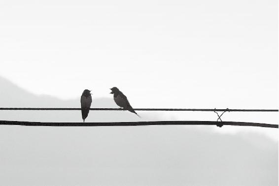
『和』是生命的大智慧，生命以 和 为贵。
梁冬：会不会有一些女性对这个过敏，对那个不过敏呢？
徐文兵：值得研究，但我碰到的案例叫精液过敏。还有的女人呢，就是没有血，没有那种阴血，表现出来的就是阴道干涩。这种人连性爱的整个过程都没法完成，更谈不上受孕了。所以受孕的前提是父精母血和——“血气已和”。
受孕的前提是父精母血和——“血气已和”。
生命是这样成形的
徐文兵：“血气已和”之后，紧跟着是“营卫已通”。继而在形的基础上，就有两套气在走，营气走的是血管里面，就是说胎儿已经开始有心脏了，也有搏动。
梁冬：刚产生受精卵的时候，怎么就会有心脏呢？
徐文兵：我们听着有胎心了，这个胎心就代表着营气通了；还有卫气——渗透在细胞间那种保卫自己的气，属阳气，也已经通了，它代表的是人体的十二正经通了。先有气，然后再有五脏，这就成形了，或者成质了。质和形都是一样的，都是一个细胞过来的。好比钻石和石墨的根儿是一样的，都是碳原子或者碳分子。但为什么表现出来心脏是心脏的样子、功能，肝脏是肝脏的样子、功能呢？素质不一样了！这是分阶段的。“血气已和，荣卫已通”到了“五脏已成”，这就发展到了素质。
营气走的是血管里面，卫气是渗透在细胞间保卫自己的气。
梁冬：基本上已经长成了，就是各个脏都分清楚了。
白天和晚上神呆在哪儿
梁冬：接下来叫“神气舍心”，是什么意思？
徐文兵：“气血已和”的时候，父精母血结合的一刹那，两精相搏就有神了。但是，神那会儿还不在心里面待着呢，因为开始还没心，还没地儿待。它待哪儿了？就待在细胞里面。
很多人说，怀孕头三个月是不能告诉别人的，很多流产、小产都发生在头三个月，为什么？有可能坐不住神啊！
很多人说，怀孕头三个月是不能告诉别人的，很多流产、小产都发生在头三个月，为什么？有可能坐不住神啊！
梁冬：这叫“事以密成”，见光死嘛！
徐文兵：“神”未必要到你们家、未必要当你们家的人呢！你给我把房子盖好啦，我才往那儿一住。这就是我们成人的一个重要阶段，叫“神气舍心”！
梁冬：“舍心”的意思就是 “以心为舍”，“心”就是“神”待的宿舍。
徐文兵：如果细分的话，白天，我们讲 “神气舍心”；到了晚上，那个神（魂）就藏到肝里面了， “肝藏血，血舍魂”，这时神就在血里面待着。
“舍心”的意思就是“以心为舍”。
徐文兵：在胎儿发育的不同阶段，我们能看到：他开始是一个细胞，后来像个小蝌蚪，再后来像条鱼，最后还像个小猪，那是他的形变。道家还有个观点和理论： “三魂”里面，父母各提供了一个。
梁冬：南怀瑾先生在讲《佛说入胎经》的时候，就提到过这个事情。
徐文兵：三魂里面的第三个是谁提供给你的？
梁冬：那我们先讲，父母各提供了哪一个魂？
徐文兵：那个胎光不见得就是你父母提供的，有些人的胎光跟父母都没有关系。比如，两个很不怎么样的父母生了一个很聪慧的孩子，或者很漂亮的孩子，那个胎光就不是父母给的。孩子像爹多？像妈多？可能这孩子以后的行为、性格就像某一个。但有些孩子生出来，爹也不像、妈也不像，如此那个神、那个“神气舍心”就不是来自他父母的遗传，那就来自something！Some，some，some，somebody！我们姑且称之为“游神”。
古代讲胎教的时候，说父母做爱的那个时间、地点、环境是很有讲究的，要避开某些日子，避开某些地方。
所以，古代讲胎教的时候，说父母做爱的那个时间、地点、环境是很有讲究的，要避开某些日子、避开某些地方，就害怕有一些不好的游神进来。道家就有这么一种理论，我们现在就姑妄言之、姑妄听之吧！
梁冬：前面呢讲到了一个很有趣的话题，就是这个“三魂”里面，父母各提供一个魂，还剩下一个魂呢，是从哪里来的？
徐文兵：举个例子吧！有些人就记得自己的前世。
梁冬：这个话题有点意思。前段时间我看到美国有一个比较严肃的科学杂志，它讲催眠术。弗洛伊德说催眠就可以看得见、记得住自己的童年，甚至是在子宫里面的样子，甚至是再往前推，用力过猛就推到上一世了。
徐文兵：中国民俗对这个的解释就是：人首先要相信有轮回转世的。那么，转世之前呢，他就喝一碗孟婆汤，孟婆汤的功效是什么？忘掉，全忘掉！有些人就漏掉，没喝或者是喝完吐了，就带着前世的一些记忆转世进来了。
其实，我们每个人都有过一种感觉：有个新地方你来了，感觉仿佛来过；或者你看见一个人，遇到某件事，觉得以前好像涉及过，就有点时空穿越的那种感觉。
“神气舍心”的意思不是离开，而是以心为舍，把心当成家。
我觉得，以一种科学的态度来讲的话，应该对此现象客观地观察、了解，这就涉及到了形而上的一些东西——“神气舍心”。“神气舍心”的意思不是离开，而是以心为舍，把心当成家。
人的“魂”“魄”是什么样子
梁冬：什么是“魂魄毕具”呢？
徐文兵：这个很关键，我们说十月怀胎，不仅指的是他的肉形、气脉发展到一定程度，最关键一点还要“魂魄毕具”。
“魂”——胎光、爽灵、幽精，是人的一种非常高级的神的活动，它代表了神的最高境界。
梁冬：前面我们讲到了三魂，有胎光，有幽精，还有一个叫爽灵。七魄是什么呢？
徐文兵：我们为什么说这个人神魂颠倒，或者魂飞魄散？魂和魄的区别在哪儿？其实，我们说的“魂”——胎光、爽灵、幽精，都是人的一种非常高级的神的活动，它代表了神的最高境界。
我们经常说“野蛮其体魄”，说“这人很有魄力”，那么“魄”是什么东西？“魄”的层次比“魂”差一点儿，它指的是不动心、不动脑子的一种神经系统高级反射。比如，手碰到火炉子上，唰地收回来了，动脑子了吗？没动！等你说，哎哟，会烫我手哦，会起水泡，会感染，你再抽回来，晚了！另外，看见美女，忍不住多看几眼，并不代表你就爱上她了。这些都是人本能的一种反应。
“魄”的层次比“魂”差一点儿，是人本能的一种反应。
所以，控制体的那套东西，我们就称为“魄”。所谓增强魄力，其实是增强不过脑子的一种本能反应。我有一个学生，以前接篮球时，球砸在脸上才有反应。后来练太极拳，接篮球时再没砸过眼镜。为什么呀？魄力提高了。 “魂”和“魄”怎么写？
梁冬：“魂”是一个“云”加一个“鬼”；“魄”是一个“白”加一个“鬼”。
徐文兵：那是什么意思？为什么两个字都有“鬼”？
本来应该在休息时出来的那种神叫阴神，白天的叫阳神，我们都称之为“鬼”。
白天，人表现出来的所有状态，不管是“魂”还是“魄”都叫神，它是申张的意思。晚上呢？在那个阴的状态中，神还在工作，但只是一部分在工作，有一部分就去休息了。谁去休息了？“魂”休息了。还在工作的那个叫什么？叫“魄”。所以，带个“鬼”字的意思是，本来应该在休息时出来的那种神叫阴神，白天的叫阳神，我们都称之为“鬼”。
“云”和“白”是什么?白，我们说你这个白话蛋，自白，说话的意思。云呢？古人云、子曰。“云”也是说话，它是个动态的意思。
在古代，还把“魄”叫月亮！新月出来了，露出个小月牙。亮的那边叫什么啊？叫“魄”。暗的那边呢？叫既生魄。比如说月亮从新月开始越来越大，变成满月（十五、十六满月）了，这叫生魄，月亮里面白的那一部分叫魄。然后，从满月又变成残月，这叫既死魄。
不管既生还是既死，月亮反射出太阳的那道白光，叫魄。神虽然睡觉了，但是还有一些余光在照耀着，还有一些在我们身体里面工作，这叫魄。
所以，观察一个人的魄，就要看他睡着后是什么样。那么，一个得呼吸睡眠暂停综合征的人哪儿有问题？魄有问题。
现在，很多人都得了失魂落魄的病，如同行尸走肉。
我们说失魂落魄，他丢了这个魄了。现在，很多人都得了失魂落魄的病，如同行尸走肉。
梁冬：我以为就是打鼻鼾、打呼噜，痰多而已。
徐文兵：不是。你想想他白天为什么不打呼噜？
梁冬：侧着身睡觉，他就不打呼噜了，躺着就打。
徐文兵：这个动作本身是清畅我们呼吸道的，它是人的一种本能反应。如果人清畅呼吸道的本能反应消失了，或是变弱了，他就好像被痰堵着，或者被小舌头压着了。这时候魄力不够，或者没这个魄力了。有些人睡着睡着就过去了，那是管心跳的魄有问题。
还有，你晚上吃完饭，第二天早晨起来又饿了，你的胃肠道是不是还在消、还在化？是不是也有一个什么东西在控制它？如果你头天吃完饭，第二天打嗝，还那个味，没消也没化，这说明什么？又丢了一个魄。
屈原说，“我有迷魂招不得”，那是他没找中医。
梁冬：有些人的魄丢了还会回来的？
徐文兵：招魂招魄嘛！屈原说，“我有迷魂招不得”，那是他没找中医。另外，头天喝水，第二天早上起来撒一大泡尿，正常。不起夜，就是肾气足，魄力也足。好多人晚上起夜，一次两次三次；还有人不起夜，做梦找厕所，找着了，哗就尿，尿床上了——又一魄出了问题。
现在，很多人都得了失魂落魄的病，如同行尸走肉。
梁冬：魄比较好的，找厕所找半天，可找着了，哎呀，裤子解不开，急哟！那就是还能控制嘛。
徐文兵：还有一个魄是管性功能的。头天夜晚有性爱，没劲儿了，累了。第二天早上又生机勃勃，又来一次“晨练”。怎么恢复的？它又是个魄。岁数越大，这个魄力越差。有时候早上起不来，隔一个月以后才能起来，这个魄力又弱了。所以，观察人在睡梦中的表现，比如说我睡得热了，蹬蹬被子；我冷了，把边上人的被子扯过来盖，这也是魄。
一个人身上最关键的魄是什么——警觉。
一个人身上最关键的魄是什么——警觉。外面有点风吹草动，你看有些人睡得跟死猪似的，有些人就能感觉到这气。
梁冬：这是好，还是不好呢？
徐文兵：睡得过死、过敏感都不好。还有人敏感到什么程度——洗手间滴答水，他一晚上都睡不着。
梁冬：那就是魄飞出去了？
徐文兵：我们后边可以给大家讲讲不同的魄，它们都有不同的名字，而且很明显地带有一些动物的痕迹。
这些东西，你用现代科学或者什么现代心理学解释的话也可以。但是，中国人在很早时就认识到了这些形而上的人的心理、精神活动，而且把它分成了七大类，每个类都有不同的名字。从它们的名字就可以看出来，所谓的这些神经系统反射，带有很多动物本能。比如说，七魄里面有个魄叫伏矢，还有一个叫臭肺，臭就是那个 “嗅”。
一个健康的人是“魂魄毕具”，就是说“三魂七魄”都存在了。
总之，魄有七个名字，七个魄分别带有不同的功能。一个健康的人是“魂魄毕具”，就是说“三魂七魄”都存在了。
梁冬：是物质产生神？还是神产生了物质？
徐文兵：从大家能理解的角度讲，是先有物质，后有功能，在功能基础上产生的火花就是神。人有肉身，又是个活体，有运、有动，然后产生了情绪、思想、感情，这叫物质产生神。
女人制造卵子，男人制造精子，精子、卵子都是物质。但为什么有些人就没有精子？或者精子存活率低，数目也少，甚至活动度差，这一切都源自于生殖功能，我们称之为气。你有这套系统、有这套机器，然后你才能制造精子、卵子。那么，气背后是什么？谁让气制造出成千上万上亿个小蝌蚪的？到底是物质创造了神，还是神创造了物质？其实这不是矛盾的，而是一个圈儿。
到底是物质创造了神，还是神创造了物质？其实这不是矛盾的，而是一个圈儿。
《黄帝内经》在这儿就谈到了父母、血气，然后谈到了“神气舍心”。“神气舍心”这句话很熟悉，“上古天真论”里已说到：“故能形与神俱，度百岁乃去。”说我们的心就像一个小旅馆，我们的神就像一个客人，它住你这儿叫“舍心”。住在你家，你把它伺候好了，它就跟你多待一会儿，你的生活质量也高一点；伺候不好它呢，形和神就分开了。
梁冬：经常换房子住的人，根据“天人感应”“天人同构”的原则，他藏在心这个宿舍里面的神会感到不安的。
徐文兵：现在比较流行出国旅游，出国旅游有个什么问题？倒时差。
什么叫倒时差？现在科学解释叫生物钟紊乱，该睡觉的时候人家的天是亮的，你该起来工作了。什么叫生物钟？它由谁控制？中医生物钟就规划得更详细，比如说:早晨三点到五点，肺开始工作；五点到七点，大肠开始工作，排便；七点到九点，胃开始工作，吃早饭了。如果分析得更细，就是说你的魂魄在掌管这些事情。另外，长途旅行的时候什么被改变了？
人在高速飞行的时候是出神（神气没舍心）的。
梁冬：身体改变了。
徐文兵：你借助了一个能量，把你的肉身推到了另外一个时空。这时，谁没跟上？
梁冬：那只能是魂魄喽！当年一个英国人在一本写他们去非洲的游记里面，说非洲原始部落的人也是这样，走一段路他就得停一停，说得让它（魂魄）跟上。
徐文兵：我观察过，人在高速飞行的时候是出神（神气没舍心）的。因为神本来就好像是你兜儿里揣的一个东西，你要走时得带着它走，它如果掉在你后面，你就会出神的。还有的人不敢坐飞机，这些人也是出神。所以，这种东西你怎么解释它？它不是个物质。
神本来就好像是你兜里揣的一个东西，你要走时得带着它走，它如果掉在你后面，你就会出神的。
我曾为一个幽闭症病人做过调治。什么叫幽闭症呢？不敢待在一个密闭的空间里，一待着就觉得呼吸喘不上气儿。这人以前做过飞行员，开过飞机。你要是从理论或者是情感上解释他胆小、害怕的原因，解释不通。你为他做心理咨询，跟他讲怎么安全，怎么可靠——没用。什么问题？神气没舍心。他的神就是在外面飘着呢。所以当你给他调整生理，导引他的“神”归位后，他就没事了。
我给他扎针时，他都得开门，门不能关，甚至他边儿上还必须躺一个人。我们那里一般都是一个诊室躺一个人调理，他必须得跟别人一屋，还得跟那个人说着话，否则他躺那儿就觉得恐怖得要死，喘不上气来。这也叫神气没舍心。
这里插一句，关于“导引”，上次我们说“导”底下是个“寸”。有的朋友就跟我说古体字底下其实是个“手”，用手指给你正确的方向叫“ 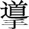
用手指给你正确的方向叫“ 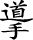
梁冬：所以，“黄帝曰：何者为神？岐伯曰：血气已和，营卫已通，五脏已成，神气舍心，魂魄毕具，乃成为人。”换句话来说，一个人的形成是有阶段性的。
所谓修身，就是要为我们的魂魄提供一个安身立命之所。
徐文兵：魂魄毕具，如果缺一两个魂魄，就得赶紧去修补。所谓修身，就是要为我们的魂魄提供一个安身立命之所，所以，修身非常重要。
现在，我们人都带着一个破碎的身、一颗破碎的心在外面混。外面有个风吹草动，马上就对自己的魂魄造成伤害。
现在，我们人都带着一个破碎的身、一颗破碎的心在外面混。外面有个风吹草动，马上就对自己的魂魄造成伤害，于是人都失魂落魄，而失眠、抑郁、狂躁等毛病，都和失魂落魄有关。抑郁的人，为什么最后觉得生不如死，非要了结自己？当他的神不在的时候，“鬼”进来了，鸠占鹊巢。你自个儿的家被“鬼”占了，“鬼”就会引导你走向灭亡，这也叫导引，但它指的是负面的那条道儿。
本来，人的生老病死、生长壮老是个自然的过程，但如果你中间出了问题，就启动了一个走向灭亡的程序，“趁早了结吧，你们这种人就该被淘汰”。
失眠、抑郁、狂躁等毛病，都和失魂落魄有关。
作为医生来讲，他是医者父母心，就觉着一个人不应该这么过早地消亡掉，然后想办法把病人体内存在的阴寒物质、能量和那种比意识还高、姑且称之为 “鬼”的东西去掉，让他的“神”又回到本位上。
人的生老病死、生长壮老是个自然的过程，如果中间出了问题，就启动了一个走向死亡的程序。
神是申张的，是主阳气、阳光的，神气是通天的，而“鬼”却引得大家归地。“鬼”者，归也，就是往下走。所以说，养生的最高境界是养神。
梁冬：说到神这个东西，有些朋友就会觉得是不是太玄了？所以你能不能站在另外一个语言体系，比如说，西方或者是现代的语言体系中来讲讲神到底是怎么回事？
徐文兵：正常人，都有求生的欲望，而抑郁症的人到了晚期，整天脑子里想的就是我怎么去死。在他们心中，死已经不成个问题，而是怎么死的问题。那么，促使他产生这种 “想死”的背后是什么？是不是一种能量？能量背后又是什么？是个念头。念头从哪儿来的？我们说只有阴寒的东西——物质，会产生一种阴寒的气，而这种气，会让你产生一种阴寒恶毒的念头。
阴寒的东西——物质，会产生一种阴寒的气，而这种气，会让你产生一种阴寒恶毒的念头。
有些抑郁症患者是先杀自己的家人、亲人，然后再杀自己。促使他们这么干的动机是从哪儿来的？这种阴寒的东西是从天上掉下来的吗？难道是突然天上有个人说“你去死，他去死”？不是吧，都是自己身上产生的。那么怎么产生的？我觉得还得从肉身着手来解决人的这些精神、情感等问题。
高层次的大夫，直接就把你这种阴寒负面的东西赶走就完了。首先是消灭它的根据地，然后切断它的营养——气血的供应线。
我接触的很多病人，本来怀着特别阴寒、恶毒，甚至要死的念头进来，出去后心情就变了。怎么变了呢？中间发生什么了？我把他身上阴寒的根据地和基础捣毁了。
梁冬：什么东西是阴寒的根据地和基础呢？
徐文兵：阴寒的痰、瘀血、气，这些东西聚到了人的心包和心那些臟腑经络里面，就会让人产生种种负面的念头。当一个人心寒了以后，神气就没法在心里面待着了，他就老是特别沮丧，脑子里面就充斥着一种念头：逃离这里，不如归去！所以，就想一死了之。
阴寒的痰、瘀血、气，这些东西聚到了人的心包和心那些臟腑经络里面，就会让人产生种种负面的念头。
现在碰到这种病，有些人还这样劝人家呢——往开想。我说这整个就是耽误事儿。劝有用吗？其实病人早就知道，道理上都明白，意识层面上也懂。你得想办法怎么深入到人的内心，触动人家心神。
我有个病人，他说自己怎么跟那个盘丝洞的蜘蛛精一样吐那么多痰。他问我：痰从哪儿来的？我答：痰是你自己长出来的呀！如果你不吐出来，让它凝结成形，总会在某个地方出现。通过这种调理，他内心那些不好的念头没了，从此以后，再不记，不想了。所以，越调治这种病，我越觉得《黄帝内经》伟大！神奇！
“痰”也是我们自身长出的，如果不吐出来，让它凝结成形，总会在某个地方出现。
梁冬：前两天，我站桩的时候感觉有气在心包经里走。当天晚上，做的梦都是特别好笑的，我都不知道是什么梦。
徐文兵：咯咯乐，心气足就喜，心气太足了就会“喜笑不休”；心气虚则悲啊！心气虚了，梦见的全是分离的梦，跟人分离，然后丢钱包。
还有的人抑郁到一定程度，会梦见他认识的死人，梦里面知道那人已经死了，但又想不起来这人为什么又活了。而且有的人会梦见这个人要拉他走，然后，他说，我不走。
梁冬：这说明什么呢？
徐文兵：梦到的都是那种阴寒的东西，我们叫“鬼”。我最近调治了一个扎完针后上吐下泻的人。她最早是失眠，后来抑郁得特别厉害。她说失眠是因为她的一个哥哥突然遭变故去世了，自从参加完他的葬礼以后，她回来就睡不着，抑郁得不行。后来她跟我说，经过我的调治后，就觉得好像从梦中醒来一样，回家睡了几个好觉。她说梦见哥哥来拉她，她就推他，说她不去。我对她说：“你这病一定快好了！”后来，她果然慢慢地就不抑郁了。
刚出生不久的小孩子，气比较弱，有经验的老人就会说小孩子不要见生人。为什么产妇要坐月子，过了百天才出来呢？
如果负面的信息和能量进入到一些母亲的“基”不够、父亲的“楯”又不强的人身上，就容易出问题。刚出生不久的小孩子，气比较弱，有经验的老人就会说小孩子不要见生人。为什么产妇要坐月子，过了百天才出来呢？就是怕冲撞。
梁冬：保姆和月嫂算是生人吗？
徐文兵：不算。但是保姆和月嫂一定要挑健康的人，要感觉气的好坏。你现在不是站桩嘛，你应该能感觉到谁的气好，谁的气不好。
梁冬：有时什么事发生之前，自己大概都有感觉。
徐文兵：这叫“血气已和，营卫已通，五脏已成，神气舍心，魂魄毕具，乃成为人”。我建议大家没事的时候叨咕叨咕这几句话，对自个儿的心神不定、不安、不宁都很有好处。
“血气已和，营卫已通，五脏已成，神气舍心，魂魄毕具，乃成为人”。我建议大家没事的时候叨咕叨咕这几句话，对自个儿的心神不定、不安、不宁都很有好处。
健康的人不见得长寿，长寿的人不见得健康
梁冬：黄帝又说了：“人之寿夭各不同，或夭寿，或卒死，或病久，愿闻其道。”他开始进一步问了。
徐文兵：最早问的是根，现在往深里问了，这就是我们说的遗传的问题。当今科学也是这样，人得了病，一说都是遗传、基因的问题。
比如你得了糖尿病，说你有糖尿病基因；你肥胖，说你有肥胖基因。这就是那种浅薄的唯物主义者没招了，就从DNA上找原因，这些人就应该去上上哲学课。我有好多病人也问我：“你看我这病是遗传病吗？我妈高血压，我爸高血压，我也高血压，这不就是遗传吗？没招。”这种人的典型思维叫什么——有因必有果。
有基因，有遗传的可能性，你就会得这个病么？你要不给它提供条件呢？也不会得，是不是？
所以说有了父亲的气和母亲的血做为根基，但是你是否能健康？不一定！你妈长寿，你爸长寿，你就长寿吗？有因不见得有果。这不黄帝就问了，说我又发现：人活着，寿夭各不同。夭，夭折的夭。像“天年”那个“天”上面是一横杠，这夭是一撇。
你妈长寿，你爸长寿，你就长寿吗？有因不见得有果。
梁冬：对，平常没认真看，真的很有意思啊，为什么夭和天写得那么像呢？
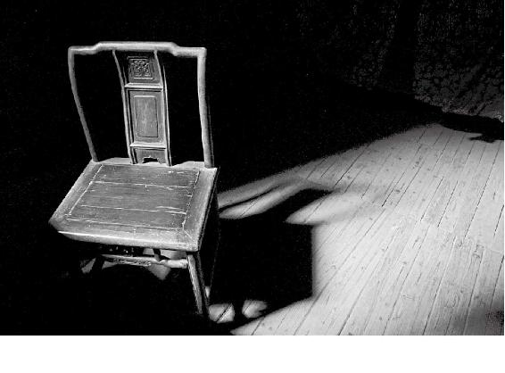
现在猝死的人太多了，一下就没了。其实没有偶然，没有突然，只有必然，是慢慢积累起来的。
徐文兵：嗯，本来该尽其天年，结果中间打了个折扣，一下就变成夭。以前说小孩子死了叫夭折。其实我告诉你，寿和夭是反意词。“寿”我说过，活过60岁为一甲子，就过了一寿。活两个甲子叫尽其天年。你要没活过60岁都算夭折。
活两个甲子叫尽其天年，你要没活过60岁都算夭折。
要是死在女人身上呢？那碰到妖精了，“夭”加个“女”字边——“妖”精。其实这就是说“以酒为浆，以妄为常”。虽然你爹妈给你的精血都很足，但你瞎折腾，这就导致人的寿夭各不同。所以黄帝问：我发现人有的活的长，有的活的短。“上古天真论”是怎么说的呢？“上古之人，春秋皆度百岁，今时之人，年半百而动作皆衰者，何也？”
虽然你爹妈给你的精血都很足，但你瞎折腾，这就导致人的寿夭各不同。
黄帝在这儿又问了，“人之寿夭各不同，或夭折或猝死。”猝死就是看着好好的，一下就没了。
梁冬：有两种，一种是自己突然那个了；还有一种就是外界的某些因素。
徐文兵：那叫暴死。外界那个就不好说了，原因更大。我们就说人为什么会猝死吧！现在猝死的人太多了，比如因心脏病，或者脑血管病，一下就没了。其实没有偶然，没有突然，只有必然，是慢慢积累起来的。你说有的人活的长，有的人活的短，有的人突然就没了，有的人尽管活的也挺长，但一直是个病秧子。
现在猝死的人太多了，比如因心脏病，或者脑血管病，一下就没了。其实没有偶然，没有突然，只有必然，是慢慢积累起来的。
曾经有人问我：“徐大夫，您说健康人是不是就长寿？”我说可不是，健康的人不见得长寿，长寿的人不见得健康。这就是很有意思的一个事情。
有些人尽管病久，但活得很长。这里面又是什么原因呢？
很多很健康的人，为什么会突然暴死？因为他们虽然汽油也足，管道也通畅，但哗一下燃烧，就愿意灿烂地活一下，这是他们追求的价值观，所以就会早死。而有些人尽管病久，但活得很长。这里面又是什么原因呢？黄帝说“愿闻其道”。“道”呀！
梁冬：这个“道道”在哪儿呢？岐伯曰：五脏坚固，血脉和调，肌肉解利，皮肤致密，营卫之行，不失其常⋯⋯”原因很长，慢慢来吧，一句一句来。
徐文兵：“上古之人其知道者，法于阴阳，和于术数，食饮有节，起居有常，不妄作劳。”知“道”，“道”是什么？
道是最高境界。
梁冬：这个问题很有意思！我们已经讲这个《黄帝内经》这么长时间了，但实际上有些问题并没有真正的深入进去，比如说神和道这些东西。什么是道？我们都知道黄老之术，《黄帝内经》和老子似乎一直以来就是一个系统的。
徐文兵：你说的是黄老之术。
梁冬：对！黄老黄老！还有黄老之道。
徐文兵：道是最高境界。
三魂七魄
梁冬：前面，我们讲到了“三魂七魄”。三魂和七魄一般人都知道。但究竟是哪三魂呢？
徐文兵：一个是“胎光”——你的生命之光，是你的元神。它没了，人就没了。另外一个是爽灵，它决定你的机灵程度或者说智力、慧力。人有没有慧根？这是“爽灵”决定的。
“胎光”——你的生命之光。人有没有慧根？这是“爽灵”决定的。
梁冬：说到这儿，很多父母就会问一个问题：中医有什么方法可以开发小孩子的“爽灵”, 也就是增强他的智力呢？
徐文兵：首先，要把外界影响他、伤到他的因素给除掉。磨砖成不了镜，他本来就不是那块料，吃这个、那个的什么东西，最后把他弄得机灵了，不大可能，他有他的天性。所以，孩子从小我们就应该观察、顺应其天性，为他设计一条人生之路，而不是说从小就人为地要把他弄成什么样。现在很多人给孩子瞎吃，反而把孩子活活地吃坏了。
中医有什么方法可以开发小孩子的“爽灵”, 也就是增强他的智力呢？
梁冬：教育以人为本。
徐文兵：这也叫“爽灵”。第三个魂叫“幽精”。听这名字有什么感觉？
教育以人为本，这也叫“爽灵”。
梁冬：觉得很飘渺。
徐文兵：“曲径通幽处，禅房花木深。”阴暗的、晦暗的、潜藏的。它其实是决定了一个人的性取向、性癖好。决定了你爱什么样的人，会对什么样的人一见倾心，也决定了人的生育能力。有人为什么会出现一些奇奇怪怪的性变态行为，就是从这儿来的。
“幽精”，决定了你爱什么样的人，会对什么样的人一见倾心，也决定了人的生育能力。
梁冬：弗洛伊德说，性变态跟童年的某些压抑有关。
徐文兵：那是他的看法。道家认为这些都是终生不变的。什么叫神？什么叫心？这些天赋的东西终生不会变。所谓意识，或者叫mind，说的是人出生以后后天教育给他的东西。还有人说，小时候把男孩当女孩养，最后男孩就变成了那种性取向。那只是一小部分原因，可能这种人的“幽精”属于墙头草，可以这面，也可以那面，不是也有双性恋嘛，这是被诱导的结果。但有些人就是固定不变。
道家看这个事很达观，叫 “各从其欲，皆得所愿”。你先发现他是什么天性，然后照他的天性去培养就可以了。有的人看到了很不自然的事，就想改变自然，愣想把人家给转回来，把人看成是精神病，要给人治。怎么治呀？当你有这种性冲动的时候，你就弄根猴皮筋儿弹自个儿，就是让你产生巴甫洛夫的条件反射，一想起这个就疼，一疼就不想，这就是“人定胜天”。
道家讲究教育孩子是发现他是什么天性，然后照他的天性去培养就可以了。
梁冬：现在，从大环境上来说，大家思想比较开明了，都承认这是一个客观现实，各从其愿嘛！
徐文兵：性取向有问题的人都是“幽精”偏异性那边的人，这种人“爽灵”都特发达。道家也发现是这样，我接触过的有些病人也是如此。
梁冬：说完了 “三魂”，还有“七魄”。其实，魂和魄是不一样的。
徐文兵：魂比魄高级。按道家的观点，你在静坐内观的时候，能体会到魂，它是着红色衣冠的三个小人，在心这儿。
魂比魄高级。
我们碰到一些陌生人的时候，会有些不安全感，这是人的本能。而碰到自己心爱的人，会拥抱一下，这是魂在相聚。
七魄的层次要比三魂低，而且明显带有一些动物的残留信息。从七魄的名字也能看出来，有的叫“伏矢”，有的叫“尸狗”，像狗一样。而且七魄的颜色是黑的。
七魄的层次要比三魂低，而且明显带有一些动物的残留信息。
梁冬：那到底七魄是什么样的东西？从中国道家或者《黄帝内经》的讲述里面，它又是如何演绎的呢？
徐文兵：道家说魂是三个人形的东西，而七魄是动物形的。有的像狗，有的像没发育好的鱼，它的反射相当于人的神经反射，不过脑子、不动心。
看见美女你多看一眼，这是动魄了；你若真爱上她，那就是动魂了。
举个简单例子，看见美女你多看一眼，这是动魄了；你若真爱上她，那就是动魂了。
魂是红色的，人形，层次比较高。因为人是经过几亿年、几亿万年，从一个三叶虫，小虫子，逐步像条鱼、像头猪，这么一步步进化过来。说白了，我们有兽性，有动物的本能。很多人讨论“人之初，性本善还是性本恶”，我说那得看你的魂的力量大，还是魄的力量大。你不能说逮着一个人，囫囵吞枣就说他是善或者恶，不见得。
很多人讨论“人之初，性本善还是性本恶”，我说那得看你的魂的力量大，还是魄的力量大。
七魄之“吞贼”
徐文兵：我建议大家晚上日入而息，要沉睡。因为根据人清除体内异己的功能（现代医学说的免疫功能）来说，身体工作一天了，会有不少外界的虚邪贼风或者叫病毒、细菌的东西进来，而清除它们的最好时机就是晚上睡觉的时候。
有一个魄专门负责这事，它偏于动物的本性，专门在夜间清除身体有害物质。你知道那个魄名字叫什么？
梁冬：杀毒软件。
徐文兵：它叫 “吞贼”，“吞”，狼吞虎咽的“吞”；“贼”，虚邪贼风的“贼”。人的免疫系统里面有个细胞叫“巨噬细胞”，看见身体里有细菌病毒了，就把它吞噬，所谓“吞贼”。
神魂颠倒的意思是白天魂出来，晚上神出来，这就把整个系统搞乱了，该“吞贼”的时候吞不了贼，久了，“神魂颠倒”的人身体就会长出异物。
有一个成语叫“神魂颠倒”，什么意思呢？神是什么时候工作？白天；魂是晚上工作，神晚上是休息的。所以，神魂颠倒的意思是白天魂出来，晚上神出来，这就把整个系统搞乱了，该“吞贼”的时候吞不了贼，久了，“神魂颠倒”的人身体就会长出异物，先长个良性的这瘤那瘤的，脂肪瘤、神经纤维瘤、乳腺增生、子宫肌瘤、卵巢囊肿……全是异己。为什么长出这些异己分子啊？“吞贼”的功能被削弱了。该让吞贼出来“吞贼”的时候，你老人家干别的去了。
梁冬：所以，大家还是应该日出而作，日落而息，该睡就睡。
徐文兵：有些人为什么长一恶性肿瘤？你想想，它是个有形的物质。怎么来的呢？前面是一个无形的能量。再往前，是一种信息——或者是感情，或者是不好的情绪。
恶性肿瘤是怎么产生的？
人肯定每天体内有异己的东西进来，要产生这种垃圾。你看很多人平复情绪，都是在睡梦中完成的。我们都爱说的一句话叫“祝你做个美梦”。本来想捡个钱包，晚上做梦捡了，第二天心情挺好。我的很多病人有郁怒发泄不了，因为他白天不可能发泄。
有个病人跟我说她昨天做了两个美梦，我说是中彩票还是怎么？她说不是，她说她终于对着欺负自己20多年的那个大姑子（他们家庭不和，原因就是丈夫的姐姐老是干涉他们家的事）说了一句憋了20多年的话。在梦里，她对着大姑子说：“你去死吧！”这叫什么？人体自我修复。当我们把她魄的功能慢慢修复好后，体内的坏情绪、脏东西就被“吞贼”全部干掉，人又活得清爽了。
很多人平复情绪，都是在睡梦中完成的。
不好的情绪、感情、气，会变成有形的物质。恶性肿瘤就是由此而生的。
七魄之“尸狗”
徐文兵：第二个魄叫“尸狗”，尸体的“尸”，“狗”就是我们可爱的狗。
梁冬：有的人睡不着，有的人又不易醒，都是尸狗出了问题。
有的人睡不着，有的人又不易醒，都是尸狗出了问题。
徐文兵：“尸狗”什么意思呢?这个狗在看家护院时它非常警觉。狗前面加了个“尸”，“尸”和“狗”本来是很矛盾的，但其实代表人的一个魄，就是说人即便睡着了，他对周围也是有感知的。你这个魄力好的话，外面有人敲门或者有人要偷你家东西，它就有警觉。但它如果出了问题，就会出现两个极端。
第一个极端是过度警觉。洗手间的马桶滴了点水，就睡不着。然后，明天早晨6点要早起，结果一晚上都不睡，上个闹钟也起来半夜看看；另一个极端是过度不警觉，睡得跟死狗似的，沉睡不起。平时，我也能接触到这样的病人。一看， 都是“尸狗”出问题了！
有的人过度警觉，马桶滴滴水就睡不着觉。另一种是过度不警觉，睡得跟死狗似的。哪个魄出问题了——尸狗。
梁冬： “尸狗”怎么调呢？
徐文兵：任何这些神、灵、魂魄的病，都要治心。心就像一个指挥家一样，调整整个身体节奏——“君主之官，神明出焉”。其实，这些高级层次上的病，全都是心病。人到了魂魄出现问题的时候，就病得不轻了！
人到了魂魄出现问题的时候，就病得不轻了！
七魄之“除秽”
徐文兵：七魄里面还有一个挺有意思的魄叫“除秽”，大扫除的“除”，污秽的“秽”。
晚上9点到11点（亥时）是三焦工作的时间，这时睡觉的话，“除秽”的功能会发挥到极致。
梁冬： “除秽”和 “吞贼”有什么区别呢？
徐文兵：“贼”是外贼，“秽”是内秽，自己代谢产生的废物。我经常跟大家说，人最好的睡觉时间应该是三焦工作的那个时间。三焦又叫胰腺。洗手的那个东西叫什么？胰子。把手洗干净，是不是除秽呀？
晚上9点到11点（亥时）是三焦工作的时间，这时睡觉的话，“除秽”的功能会发挥到极致。
梁冬：所以，老年人要想长寿，看完《新闻联播》就睡。
徐文兵：现在江河污染比较严重，就好像我们身体里面血液被污染了一样。有些人血液里面出现很多油脂，有些人还有什么尿酸。怎么尿酸跑到血里面去了？五脏本来藏精的，现在五脏变成了“脏”，脏器藏污纳垢，血液污秽。
有的人活着活着，眼睛就变污浊了。这些秽物为什么留在你体内？为什么有些人出现便秘，尿不出来，或者大便不痛快？因为你的一个魄——“除秽”出问题了。
我们看小孩子，眼睛那么清澈明亮。而有的人活着活着，眼睛就变污浊了。这些秽物为什么留在你体内？为什么有些人出现便秘，尿不出来，或者大便不痛快？因为你的一个魄——“除秽”出问题了。
七魄之“臭肺”
徐文兵：还有个魄叫“臭（xiù）肺”，或者“臭（chòu）肺”，它对呼吸有调节作用。“臭”是“嗅”觉的“嗅”去掉口字边，其实就是“臭肺”。另外，人睡着了以后还有呼吸吧？有“呼”有“吸”。还有那个休息的“息”字，很多人就不认识。有人说：“徐大夫，我休息不好。”我说：“你是休不好，还是息不好？”
“休”是肉身放倒了靠着树，靠着个木。“息”是说健康的人呼和吸之间是有停顿的，这个停顿叫息。
“休”是肉身放倒了靠着树，靠着个木；“息”是说健康的人呼和吸之间是有停顿的，这个停顿叫息。息越长，说明肺活量越大，或者是吐纳呼吸的功能越好。
不健康的人是什么？上气不接下气，根本没有停顿。没有息，就是“生命不止，战斗不息”。
不健康的人是什么？上气不接下气。根本没有停顿，没有息，就是“生命不止，战斗不息”。
人在睡着以后，这个呼吸功能很有意思，它同时受两套系统支配。而像我们其他的功能，比如心跳、胃肠蠕动是受心神控制的，或着说受魂魄控制，它们不受你意识控制，你不能说我的心跳快点、慢点吧。但是，这个肺它同时受两套系统控制，你可以不管它，它自己在那儿呼吸，你睡着了它也可以呼吸；你也可以用意识控制它，就是喘喘气，调调。
这个肺它同时受两套系统控制，你可以不管它，它自己在那儿呼吸，你睡着了它也可以呼吸；你也可以用意识控制它，就是喘喘气，调调。
所以，肺正好是我们的心神（天赋的心神）和后天意识中间的一道桥梁。如果想要心神被影响或不受影响，怎么办呢？通过调整呼吸、调息，搭个桥过去就行了。
梁冬：很多人晚上打呼噜，打到一半突然停在那儿，很吓人的，你得赶紧摸一下。
徐文兵：这叫呼吸睡眠暂停综合征，现代医学的名词。其实就是我们的“臭肺”不工作了之后，开始是呼吸暂停，结果是心跳骤停。
梁冬：其实，平常很少有人注意到自己呼和吸之间这短暂的停顿。
徐文兵：没有。关于“息”，很多人不认识这个字，包括我。我最近几年研究汉字，后来读南怀瑾老师的书，人家给我一下指清了，息是呼和吸之间的停顿。我突然意识到原来如此。
息是呼和吸之间的停顿。
梁冬：人生也就在这一呼一吸之间。孙思邈老先生就讲过，人一生一天有多少吸，一年有多少吸，都是有定数的。
徐文兵：心跳、呼吸都有定数。明白呼吸真谛的人就是那种非常缓、不急的人，包括心跳相对慢的人，他们都是长寿的人。呼吸急迫、窘迫、上气不接下气的人，甚至张口抬肩去喘、去哮的人……这些人都活不长。
明白呼吸真谛的人就是那种非常缓、不急的人，包括心跳相对慢的人，他们都是长寿的人。
梁冬：刘力红老师曾经讲过这件事情，他说人生中什么叫“气数”？就是呼吸的次数。
徐文兵：你呼吸得短，那么你的整个数量就用得快，很快就没了。所以，很多人经脉通畅以后，他的呼吸都能透得很深，就是一口气下去到脚后跟了。我们现在人都是什么？呼吸很浅表，最后一口气捯不上来——咽了气了。
“气数”？就是呼吸的次数。
梁冬：提醒大家，如果有意识地想到自己正在呼吸，你就是一个人。平时请尽可能地把气往下引，坚持下去，如果气不能到脚后跟，起码能够到丹田。如果不能到丹田，起码能到肚脐眼。
徐文兵：总结一下，前面讲到了最重要的一个魄叫“臭肺”。只要你有打呼噜、憋醒，甚至心脏骤停的问题，都要好好调这个魄。
七魄之“雀阴”
梁冬：有一个魄叫“雀阴”，它是干什么的？
徐文兵：你看它是怎么写的？麻雀的“雀”，阴阳的“阴”。
梁冬：古人取名字很有文化啊！这是不是跟鸟有关的一种本能？
徐文兵：这个魄呢，就是让我们的生殖功能在晚上得以恢复。有人说，那是不是女性没有“雀阴”？不对。男孩子的阴茎我们叫小雀雀，女性的那个阴蒂也相当于是雀，它也是个小突起。
要记住，人的性功能是在晚上日入以后，通过魄的工作恢复起来的。
人的性功能是在晚上日入以后，通过魄的工作恢复起来的。
梁冬：人家说做夫妻运动要在睡前，然后睡一觉，第二天就好了。
徐文兵：如果一个人的魄力，也就是“雀阴”功能好的话，头一天有这种欢爱，第二天照常“性致勃勃”，功能恢复了。
要是“雀阴”的功能弱了，可能一周以后你才能“性致勃勃”。再弱一点，一年，甚至再弱的话就起不来了，这说明这个魄力弱了。还有人的表现是功能不仅衰弱，而且有外面的邪气进来。
如果一个人的魄力，也就是“雀阴”功能好的话，头一天有这种欢爱，第二天照常“性致勃勃”，功能恢复了。
梁冬：那是什么呢？
徐文兵：性梦。《伤寒论》《金匮要略》对这方面都有论述，我的病人里面也有这种情况。就是说男人梦遗，在梦里面云雨一番。
《红楼梦》里面有个贾瑞，单相思爱上了王熙凤，王熙凤又毒设相思局，给贾瑞约上，然后让人家冻一晚上，还给人身上泼粪，最后闹得那哥们儿落荒而逃，那叫落魄，弄得人家最后是看着风月宝鉴死的。看这面，王熙凤招手；看那面，一个骷髅头。最后精竭而亡。这说明一个人失精以后，他的神就不足了，不足了以后，就容易被外界的不良信息、能量干扰，这些东西都要去调他的魄。
一个人失精以后，他的神就不足了，不足了以后，就容易被外界的不良信息、能量干扰，这些东西都要去调他的魄。
前面我说中药里面有能调治这种病的，这个药叫茯苓。
梁冬：茯苓，不是土茯苓。
徐文兵：土茯苓是广州人煲汤、祛湿热的。但我讲的这个茯苓是松树上结的真菌块。把它切好了，有时候拌点朱砂用。这是通灵的。
梁冬：朱砂是什么东西？
朱砂是祛邪气的。
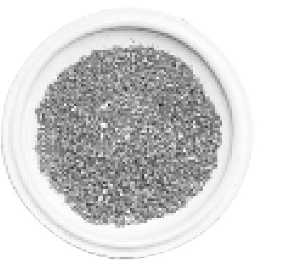
朱砂
徐文兵：祛邪气的。
梁冬：我看以前那些道士会用这种东西。朱砂是一种矿物吧？
徐文兵：是硫化汞，它加热以后分解成硫黄和水银，这是古代炼丹的人发现的。朱砂本身的红色叫正红色，跟我们的心血和我们的心神—— “魂”的颜色是一样的。
以前，皇帝御批都是用朱砂，颜色千百年不褪。这是味通魄的药。还有碰到一些魄出了问题的人，中医经常会开点琥珀粉，一克或三克，冲服。
皇帝御批都是用朱砂，颜色千百年不褪。这是味通魄的药。
梁冬：有用吗？有实践经验吗？
徐文兵：谁能拍着胸脯说百分之百有用？只能因人而异，这是在讲中医的道理。还有，我们这个厚朴中医学堂其实叫厚朴（pò)，厚朴（pò)这味药也能通魄。
如果一个人 “雀阴”出了问题，就会出现一系列的混乱，有的人会梦遗，有的人会白带过多……这些病，中医都有调它的方法。另外，中医还会用到一些矿物药，比如说 “龙骨”——史前动物的化石。
梁冬：现在药店还有卖的吗？为什么会有呢？我觉得这应该是文物了哦。
徐文兵：有的是文物，比如在民国初年发现的龙骨，实际上是殷墟甲骨的一些残片，还有安阳出土的甲骨残片，包括龟板、鳖甲的残片。还有一些牛的肩胛骨残片，有些人就把它当龙骨来用。其实真正的龙骨是动物的化石，不见得是恐龙化石，也许是其他的动物经过多少年形成的。中医用它来驱邪气，安定人的魂魄。
中医真的是个非常伟大的行业，里面有着非常伟大的学问，它也通到了整个中国文化太美的序列里面。
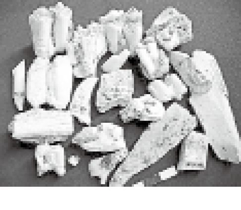
龙骨切片
梁冬：中医真的是个非常伟大的行业，里面有着非常伟大的学问，它也通到了整个中国文化太美的序列里面。
七魄之“非毒”
徐文兵：现在讲的这个魄，名字也挺有意思的，它叫“非毒”！
梁冬：为什么叫“非毒”呢？
毒可不见得是害。
徐文兵：什么叫“毒”？我们经常说“毒害”，以为毒就等于害，一说这人有毒，意思就是说有害。其实，毒可不见得是害。
梁冬：毒是什么呢？
徐文兵：是药三分毒。神农尝百草，一日遇七十毒。什么叫“毒”？我们经常说这个人眼很毒，刁钻！手毒！什么意思？凝聚，能够把他的气或者神聚到一点，这叫毒。
能够把气或者神聚到一点，这叫毒。
比如，我们说一面镜子，它对着太阳照，反射的是太阳光。但要是面凸透镜呢？它就聚光！聚光之处的纸片、木屑就会着火，这叫火毒！喝一杯凉水，当这杯凉水凝聚成一块冰你再吃，这就中“冰毒”了。
精气凝聚在一点的时候叫“毒”，但当我们的精气是散的时候，“毒”没什么用。“好钢用在刀刃上”，当人聚精会神、精诚所至的时候，它就形成了一种超强的力量。
当人聚精会神、精诚所至的时候，就形成了一种超强的力量。
梁冬：什么叫“非毒”？是否就是不要聚在一起？把这个东西给散开？
徐文兵：人在熟睡的时候，有一个魄在工作，把你身体里面聚众滋事的，不管它是热毒还是寒毒，都给散了。散了、分成小块以后，“吞贼”来了，把它吞了。然后“除秽”来了，把它排除掉。流水线作业。我们经常说“解毒解毒”，什么意思？就是把已凝聚成、快成事的那个东西给散了。只有凝聚才会成毒。有人平常买牛黄解毒丸，我说：“你们可能把‘清热’很肤浅地理解成解毒了。”
“解毒解毒”，什么意思？就是把已凝聚成、快成事的那个东西给散了。
什么是真正的解毒？什么是疱丁解牛？就是从内部把它的结构瓦解了，这叫解。如果从外部给你解开捆绑，那就叫释。我们经常说“你给我解释一下”，我说：“你是让我解一下，还是释一下？”
从内部把它的结构瓦解了，这叫解。如果从外部给你解开捆绑，那就叫释。
还有我们经常说的“稀释”，也是“非毒”。你吃一个菜，盐放多了，齁齁的，过遍水，稀释开了。所以，大家想一想，那些癌症、肿瘤，不就是“聚”了嘛！它就是徒有人在那儿号召，徒有能量在那儿支撑。如果它聚不起来，也成不了气候。
曾有一位年轻女演员不幸去世了，生前她说她演戏、拍电影时曾经五天五夜没睡觉，人都木了。所以，我们要想一想，睡着以后干吗？“非毒”。
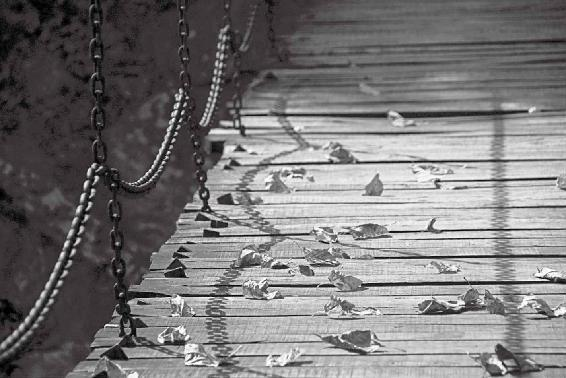
很多人其实是死于无知，死于无觉。
梁冬：原来我们身上的免疫系统，其实可以拆解成若干功能。
徐文兵：道家早就发现了它们，而且给予了适当的名称。
自己的身体本来有清除毒素这一套完善功能的组织，你为什么不让它工作？魄就是在晚上睡觉的时候开始工作的，你那会儿去兴奋，去应酬，怎么行？
很多人不是累死的，而是死于无知，死于无觉。
道家管睡觉叫什么？小死。
看一个人身体健康不健康，你就看他早晨那样子。
有些人睡了一天了，甚至八九个小时还是那么累。这说明他身体没产生精。而具有产生这个精功能的，又是一个魄。
人的精气是从丹田这儿发酵的，大肠杆菌、其他的有益菌也在这儿发酵，帮助你把这些糟粕、腐朽化为神奇。这是“伏矢”干的。
梁冬：不仅很精准，而且很漂亮。
徐文兵：现在，很多女性是自己发现乳腺癌的，摸了半天，这儿怎么长了东西？再看有橘皮一样的皮肤恶变，到医院检查，做病理切片，发现得癌症了。我们想想，自己的身体本来有清除毒素这一套完善功能的组织，你为什么不让它工作？魄就是在晚上睡觉的时候开始工作的，你那会儿去兴奋，去应酬，怎么行？
我周围有一些朋友，他们先参加晚会，10点钟晚会散了，再去吃夜宵，吃完夜宵再去喝红酒，折腾到凌晨四五点。我一看，就是活活要把“非毒”这个魄弄死，最后让身上开始长东西。
很多人不是累死的，而是死于无知，死于无觉。
梁冬：所以，很多人不是累死的，而是死于无知，死于无觉，那个觉就是魄。
七魄之“伏矢”
徐文兵：道家管睡觉叫什么？小死。就是人沉沉睡去以后，好像是死了，其实是在养精蓄锐，在充电、恢复。包括我们说的“吞贼”“除秽”“非毒”都是这样。
道家管睡觉叫什么？小死。
“伏矢”除了清除异物以外，它还要长新东西。早上起来焕然一新，一个鲤鱼打挺起了床，觉得这一天倍儿精神。“一日之际在于晨，我兴致勃勃地要去干事了”，他除了生理 “勃勃”外，心理也 “勃勃”。
看一个人身体健康不健康，你就看他早晨那样子。好多人早上一醒，“哎哟，又他妈一天！”有些人一起来，就是精神焕发、容光焕发的。
看一个人身体健康不健康，你就看他早晨那样子。
梁冬：有些人睡了一天了，甚至八九个小时还是那么累。
有些人睡了一天了，甚至八九个小时还是那么累。这说明他身体没产生精。而具有产生这个精功能的，又是一个魄。
徐文兵：这说明他身体没产生精。而具有产生这个精功能的，又是一个魄。
梁冬：这个魄是什么呢？它为什么可以令我们在一觉睡醒之后神清气爽、兴致勃勃？
徐文兵：这个魄的名字叫“伏矢”。伏是潜伏的“伏”，“矢”与射箭有关，就是“有的放矢”的“矢”。矢在古代是个通假字，相当于屎尿的“屎”。人的精从哪儿来的？我们都知道脑袋里面是存精的，精髓，但真正化生精气的地方在丹田——肚脐下面，也叫关元，解剖打开后我们叫屎肠子——糟粕潜伏之地。我以前讲过，人干吗要长条大肠？让小肠清理糟粕好了，好的留下来，不好的扔出去就完了。
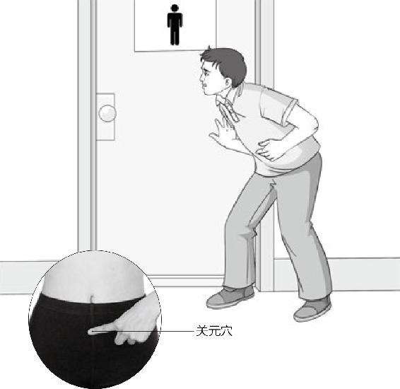
精气不足了，爱拉肚子了，快去求关元穴吧。
为什么让糟粕在那儿留那么长时间？而结肠、升结肠、横结肠、降结肠还留那儿， “大肠者，传导之官，变化出焉”。什么叫变？什么叫化？有形的物理变化叫变——原来是松散的、聚不成型的，给它捏成块，成个条。化呢？人的精气是从丹田这儿发酵的，大肠杆菌、其他的有益菌也在这儿发酵，帮助你把这些糟粕、腐朽化为神奇。这是“伏矢”干的。
人的精气是从丹田这儿发酵的，大肠杆菌、其他的有益菌也在这儿发酵，帮助你把这些糟粕、腐朽化为神奇。这是“伏矢”干的。
我们说“好汉经不住三泡稀”，吃了就拉，拉了以后，精没了，没有机会去化。还有人出现什么五更泄——大早上起来冲到厕所里面“哗哗哗”，水一样一泻千里。这也是“伏矢”没有很好地工作，没有把糟粕去塑造成形，转化为人的精气造成的。
大肠的功能是什么？首先是有力量的，没有力量怎么把糟粕塑造成形？第二，大肠里面充满了污浊的东西以后，人拉出的屎是细的，跟面条一样，为什么？大肠内部充满了其他异物。所以，通过排便就能判断出一个人心功能、肾功能、大肠功能的好坏。这也是“伏矢”所具有的功能。
梁冬：《本草纲目》里面有一味药叫人中黄，到底是干吗的？
徐文兵：利用外界的这些糟粕的东西，把中药放到里面去发酵。也就是甘草放到一个竹筒里面，浸泡到粪池里面去发酵。
梁冬：它有什么用呢？
徐文兵：治疗人吃什么拉什么，就存不住的毛病。有些人吃菜拉菜，吃什么饭拉什么饭，最后那大夫说：“你只能吃屎了。”其实他讲了一个道理，就是利用人或动物的粪便，培养出一些对人体内有益的菌群，让它重新有生机去工作。
所谓的污秽和糟粕也就是一线之隔，把它转化得好，你就有精气神；转化不好就变成伤害自己的异物了。
现在，很多人滥用抗生素以后，把大肠里面的菌全杀掉了，还有的人就去洗肠子，根本不给“伏矢”机会。“伏矢”本来兴冲冲出来要工作，突然发现没原料了。其实，所谓的污秽和糟粕也就是一线之隔，把它转化得好，你就有精气神；转化不好就变成伤害自己的异物了。所以正常的人是经过一夜睡眠，早晨五点到七点正常排成形的便，而且排得很爽快。这个时候说明你的精气是足的。老不大便或者要不就泄肚子的人，一看就是精气不足。老不大便或者要不就泄肚子的人，一看就是精气不足。
“三魂七魄毕具，乃成为人。”这就是我们岐伯——黄帝的老师告诫给黄帝的，人除了具备肉身，还要具备“魂魄”——“血气已和，荣卫已通，五脏已成，神气舍心，魂魄毕具，乃成为人。”
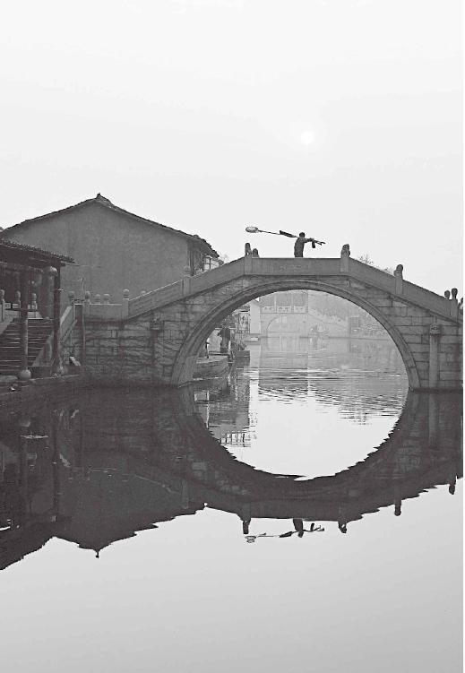
所谓的污秽和糟粕也就是一线之隔，利用得好，同样是宝物。很多时候，我们看待事物要有两面性，也要懂得利用资源。
梁冬：从这二三十个字里面，我们可以看到中国文化的力量，如此简短的文字，居然能把“一个人怎么成为一个人”这么伟大的问题讲述清楚。《黄帝内经》真是一本太伟大的书！
人如果得了病，其实是身、心、灵都出了问题。
徐文兵：人如果得了病，其实是身、心、灵都出了问题。现在人都爱做体检，我说你们怎么不做个身检？很多人做完身检，我说你怎么不做个心检？不检检你的魂，不检检你的魄？中医有这一套，需要我们把它发扬光大。因为人任何一个魂魄出现了弱、过亢的问题，或者是失去了这个功能，就会得相关的一系列疾病。
人任何一个魂魄出现了弱、过亢的问题，或者是失去了这个功能，就会得相关的一系列疾病。
梁冬：我们祝愿每一位朋友都能够身、心、灵得以安宁！
徐文兵：“神气舍心，魂魄毕具！”